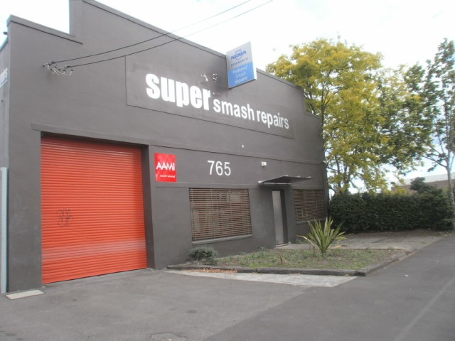

Super Smash Repairs is a leading panel beater and spray painter located in Rosebery.
Established over 40 years ago, we have the experience to provide you with top quality repair work in a shorter amount of time.

Contact
(02) 9669 3700
765 Botany Road
Rosebery NSW 2018